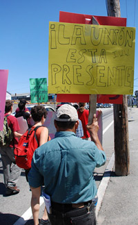

Second protest march planned
Submitted on Thu, 08/16/2007 - 2:58am
Disclaimer - The opinions of the author do not necessarily match those of the IWW. The image pictured to the right did not appear in the original article, we have added it here to provide a visual perspective. This article is reposted in accordance to Fair Use guidelines.
By Richard C. Dujardin - Providence Journal Staff Writer, Thursday, August 16, 2007
NORTH PROVIDENCE — The group that staged Saturday’s protest march in which a 22-year-old woman suffered a broken leg while being arrested by the police has invited members from across the Northeast to join another march down the center of Mineral Spring Avenue to call attention to what it says is the “prevalence of police brutality” in Rhode Island.
The announcement by the 35-member Providence chapter of the Industrial Workers of the World that it intends to defy the town and parade without a permit on Aug. 26 came as Attorney General Patrick C. Lynch called on North Providence police to turn over the results of any investigation into the injuries suffered by demonstrator Alexandra Svoboda so his office can conduct a review. He said the state police will assist in the review.
Michael J. Healey, Lynch’s spokesman, said Lynch’s call should not be seen as a response to the “laundry list of demands” that members of the IWW issued Tuesday — one was that Lynch investigate Saturday’s events.
Rather, he said, Lynch was taking the step “because it’s the right thing to do.”
“The photographs I have seen depict a serious injury and are certainly very troubling,” Lynch said in a statement issued last night. “I can only hope Alexandra’s recovery is swift and complete. The photographs constitute only a snapshot, however, of the end-result of a series of incidents whose chronological facts need to be fully explored and developed before any conclusions are reached.
“When a citizen who is in contact with the police is injured, everyone benefits from full and impartial review of the incidents preceding the injury. Fairly or not, the perception exists that police departments cannot properly investigate their own members … With regard to the laundry list of demands issued [by the IWW, including a demand that all charges against Svoboda and another protestor be dropped] I would simply state that in Rhode Island we conduct investigations before we reach conclusions and neither political ideology nor attempting to score PR points will drive the process we anticipate undertaking shortly.”
Although the IWW claims a long history with about 2,000 members nationwide, its 35-member Providence chapter gained public attention only last weekend when a member was injured while the group was marching (without a permit) down Mineral Spring Avenue to demand that Jacky’s Galaxie restaurant stop purchasing supplies from a company in New York that it says has a poor labor record.
(The owner, Kin “Jacky” Ko, says he stopped using HWH Trading more than a month ago and filed a request for a temporary restraining order, to be heard in court this morning, to make the Providence group stop picketing his restaurant chain.)
While there have been conflicting accounts as to what happened, narratives provided by the officers directly involved in the incident suggest that they were not only surprised by the demonstration but they were uncertain what to do — since the demonstrators refused to heed their demand to get out of the way of traffic and to walk on the sidewalk.
Officer Mark M. Mastin goes on to describe the scene when the crowd brushed past him in front of Luca Music:
“At this point I turned to see a white female with a bucket tied around her neck and holding drumsticks. She pushed Patrolman [Jeffrey D.] Antonelli with both hands holding the drumsticks and said {expletive} Don’t put your hands on me. At this point Ptm. Antonelli and I tried to grab the suspect by the arms. The crowd of demonstrators pulled her body out of our reach and back into the crowd. I saw this female standing at the rear of the crowd, so I circled around the ground. Ptm. [William J.] Shurick and I grabbed a hold of the suspect and advised her that she was being placed under arrest. She pulled her hands away and started swinging the drumsticks screaming [expletive]. As I tried to grab her arms she swung the drumsticks hitting our arms. In fear of our safety, we immediately grabbed her arms again and tried to take her into custody.
“The crowd of demonstrators began screaming and advancing toward us. They were attempting to pull the suspect away from our custody. When we broke the suspect free from their hold, she was taken down to the ground.”
Mastin said that after fending off several people, he noticed that the woman in custody had an injured leg. “I immediately advised dispatch to get a rescue on scene.”
Mayor Charles Lombardi said yesterday that he has become more convinced that the demonstrators had little interest in the rights of workers in New York, and that they had staged the march — which blocked traffic for at least a mile in both directions — to “lure police into a confrontation” as a way of calling attention to themselves.
He said that if the group attempts to conduct a similar march on Aug. 26 from the North Providence Town Hall to the North Providence Police and Fire station and refuse to heed demands to move onto the sidewalk, “we will act accordingly.”
“We cannot allow people to break the law, especially when the lives and safety of the public is at stake. We estimate that there are at least 35 emergency rescue runs that take place on that road every day.”
Deputy Chief Paul Marino said the department’s internal affairs investigator did attempt yesterday to interview Svoboda, who was listed in fair condition last night at Rhode Island Hospital, but was told by the family that she would not speak to police without an attorney present.
Marino said he can understand that position, but is still bewildered that the protesters never bothered to contact the police prior to the protest. “We are sympathetic to what they are trying to bring to the public’s attention, and we could have provided them with a safe route. It is strange, they are trying to speak up for the rights of works, but at the same time they are making it difficult for law-abiding citizens, including our elderly, who need to use that road.”